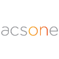

ACSONE
Present in Belgium and Luxembourg for more than 20 years through 3 different organizations, the Acsone team has acquired the experience, the expertise and the practice of building efficient and reliable software solutions based on open standards, open architectures and open source technologies.
Openness is one of the core values of the company and has become a strong trade mark of Acsone in the market.
BUSINESS LINES:
• Business processes automation and business applications built on JAVA and ODOO platforms.
• Content and document management leveraging our more-than-20-years’ experience.
• XBRL business reporting for financial and corporate markets.
• Web GIS: end to end open source technologies to integrate geographical information within business applications.
VALUES:
• Business Ethics: We believe in strong business ethics, always working with the utmost respect, trust, and integrity. We apply these values across the board to our customers, employees and partners.
• Commitment & trust: No method, technology, or package is selected unless it can ensure compliance, within our customer’s context, with the identified requirements, performance standards, and project budget. Our team is committed to results while working on fixed-price projects.
• Quality: Acsone is certified ISO 9001-2008. Our team applies only certified processes and industry best practices to every project to ensure our customers benefit from the long-term value and return on investment that high quality work delivers.
• Innovation: We are driven by our passion for innovation: it’s what propelled us to the top of our industry and what keeps us ahead of the curve on emerging technologies and trends.
Informations sur l’entreprise:
Site web:
http://www.acsone.eu
Siège social:
Brussels
Année de création:
2011
Type d’entreprise:
Société à responsabilité limitée (SRL)
Taille de l’entreprise:
11 à 50 employés
Spécialisations:
IT Project Management, Business Process, Automation, Document and Content Management, DITA, Open Source Software Solutions, ERP (Odoo), Financial and Business Reporting (XBRL), GIS, Energy et Public Sector
Suite:
Interview